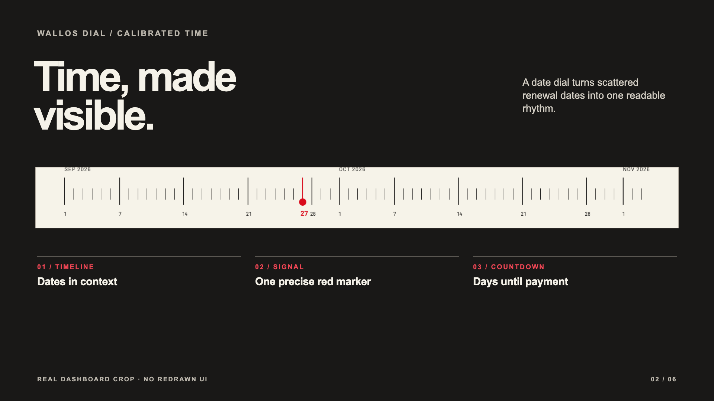
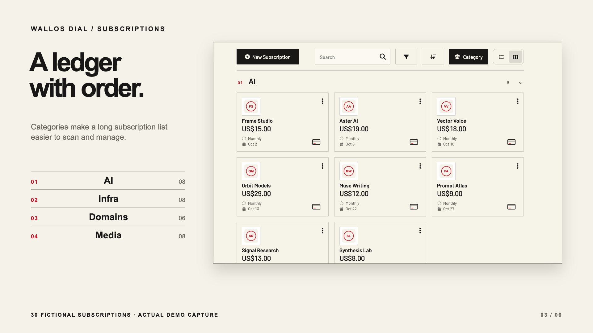
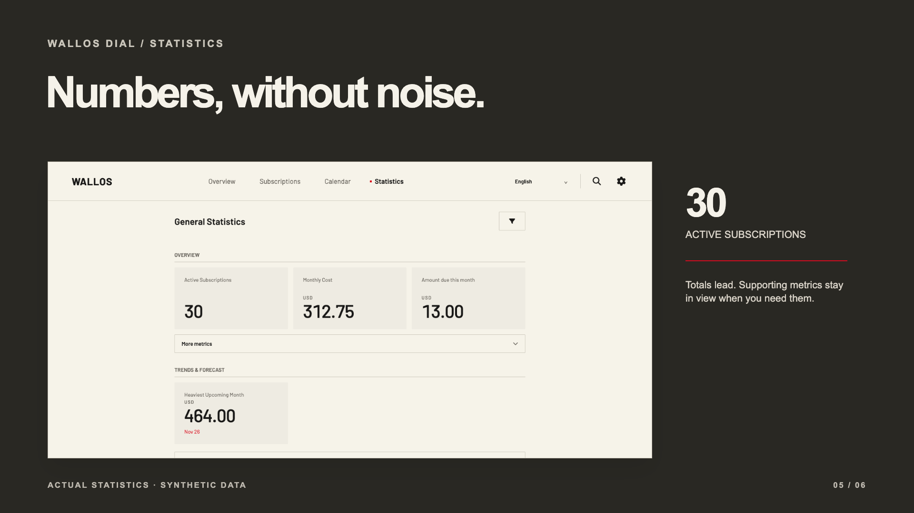

01 / TIME
Know what comes next.
The dashboard combines monthly cost, a date dial, the next payments and calendar-day countdowns. The red marker gives the timeline a single point of focus.
See the original comparison ↗Open source · Desktop first · Wallos 5.8.1
Wallos Dial is an independent desktop theme for Wallos. It puts recurring costs, upcoming payment dates and subscriptions into a calm, precise view while keeping familiar Wallos workflows.

The design
Warm ivory, dark figures, calibrated dates and a small red signal carry one visual language across the desktop interface.

The dashboard combines monthly cost, a date dial, the next payments and calendar-day countdowns. The red marker gives the timeline a single point of focus.
See the original comparison ↗
Grouped subscription cards make a longer ledger easier to scan. Search, filtering, sorting, list and grid views remain available in the installable app.
Explore the poster series ↗
The calendar and statistics pages use the same restrained typography and palette. Totals lead; supporting figures and category splits stay available for closer review.
See calendar and statistics ↗Real application · Fictional records
The live demo runs the actual Wallos Dial PHP application with 30 fictional subscriptions. It is public and read-only. Browse the overview, grouped ledger, calendar, statistics and language switch; install your own instance to edit data and manage an account.
What stays familiar
Adding, editing and managing subscriptions remain in the installable Wallos application.
The header offers English, Simplified Chinese, Traditional Chinese and Wallos's other locales. User-entered subscription names stay as entered.
Dial 0.1.0 is pinned to Wallos 5.8.1. New upstream versions need a reviewed Dial update.
Self-hosted installation
Start a new instance with Docker Compose. For an existing Wallos database, make a backup and read the migration and rollback guide first.
Installation and upgrade guide ↗git clone https://github.com/LukeVoidX/wallos-dial-theme.git
cd wallos-dial-theme
docker compose up -dhttp://127.0.0.1:8282 on the Docker host, or use SSH port forwarding.Clear answers
No. Wallos Dial is an independent GPLv3 source overlay built into a Docker image. It is not affiliated with the Wallos project or an in-app theme setting.
No. This release is tested only with Wallos 5.8.1. A newer upstream version requires compatibility review, rebuilding and a new tested Dial image.
No. The shared demo is read-only and uses 30 fictional subscriptions. Install the image to use account and editing features.
The interface language changes. Names and notes entered by a user remain in their original text.